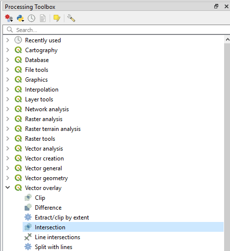
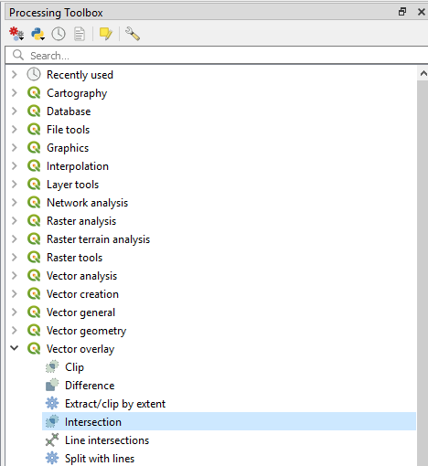
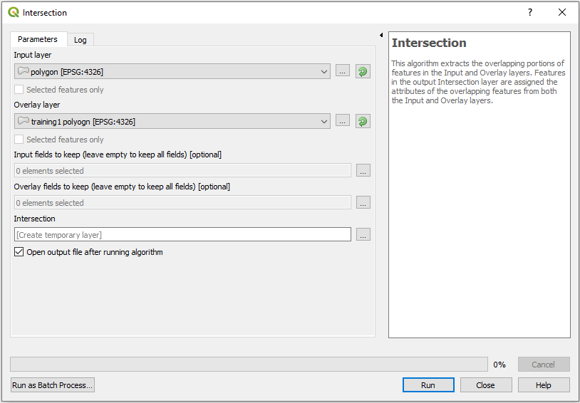
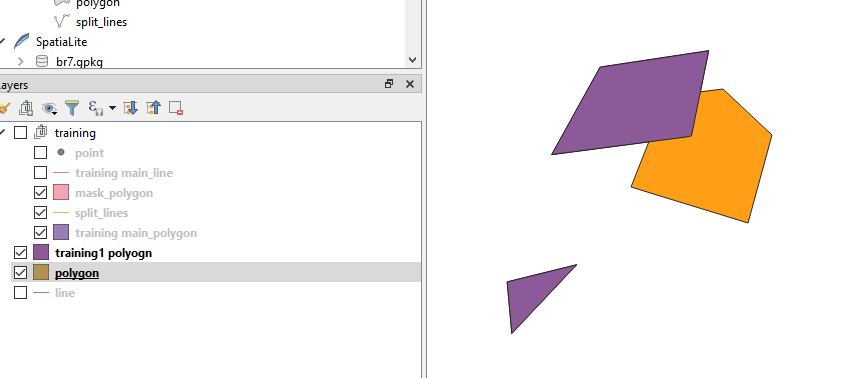
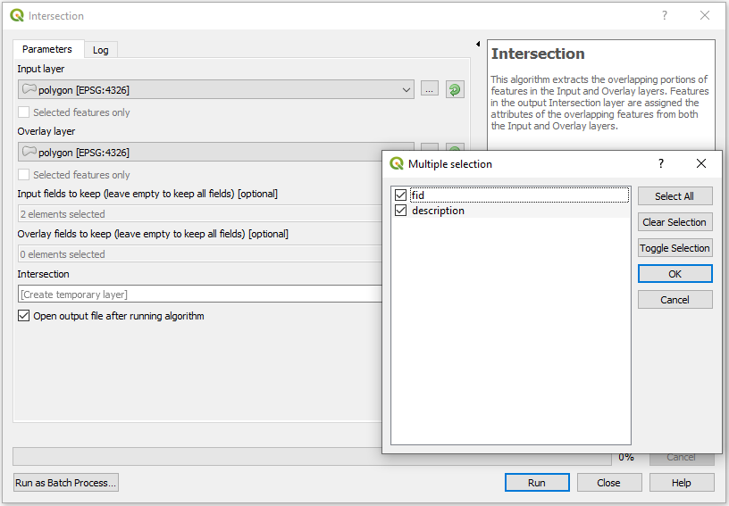
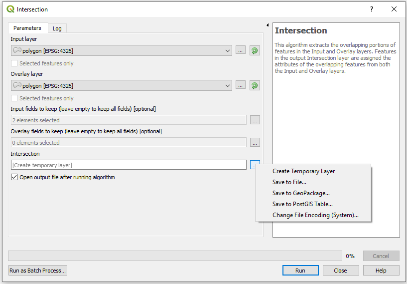
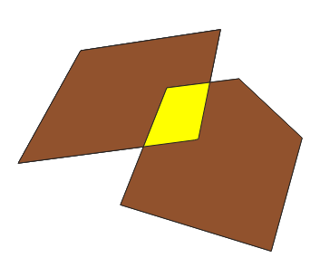

Analysis Toolbox - Overlay Toolset - Intersect
Back To The Analysis Toolbox
Back To Homepage
The Intersect tool in QGIS is very similiar tool to the one in the Analysis Toolbox, To reach it go to the Processing Toolbox. If you don't know how to open it, feel free to head over to the Introduction To The Processing Toolbox.
After opening the processing toolbox we can either search or go to the Vector Overlay tools with the QGIS marker, there we can find the Intersection tool, It should be there and also in the Vector Panel -> Geprocessing Tools -> Difference, both locations are shown below.
 
The Intersection window should now open, i wanted to get the intersction between the purple training 1 polygon layer and the orange polygon layer

The Intersection window should now open, i wanted to get the intersction between the purple training 1 polygon layer and the orange polygon layer  If i only want to use some of my fields in the new layer then i have to decide which of my layers will be the Input and which the Overlay.
 The output can be saved to a new layer in many different options, I chose to use a temporary layer, you can use a file or PostGIS\Geopackage table.
 My output looks like this, with three distinct polygons (the middle one is selected).
 And thats it, Simple and easy to use, and now you know how to do that in Open Source. Go back to the top
Back To The Analysis Toolbox
Back To Homepage